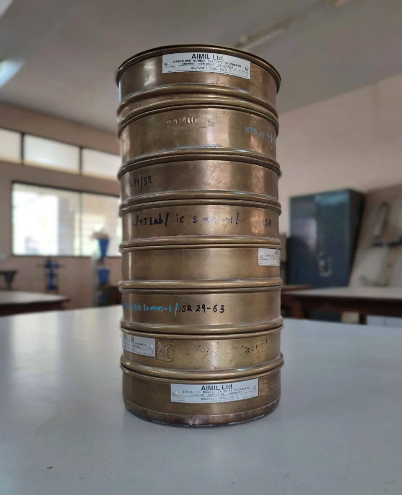

Sieve Analysis
Apparatus:

1. Set of IS sieves: 4.75mm, 2mm, 1mm, 600 micron, 425 micron, 300 micron, 212 micron, 150 micron, 106 micron, 75 micron.
2. Brushes to clean the sieves.
3. Mechanical sieve shaker
4. Balance
5. Trays
6. Thermostatically controlled hot air oven